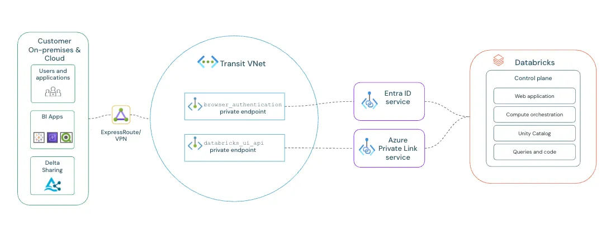
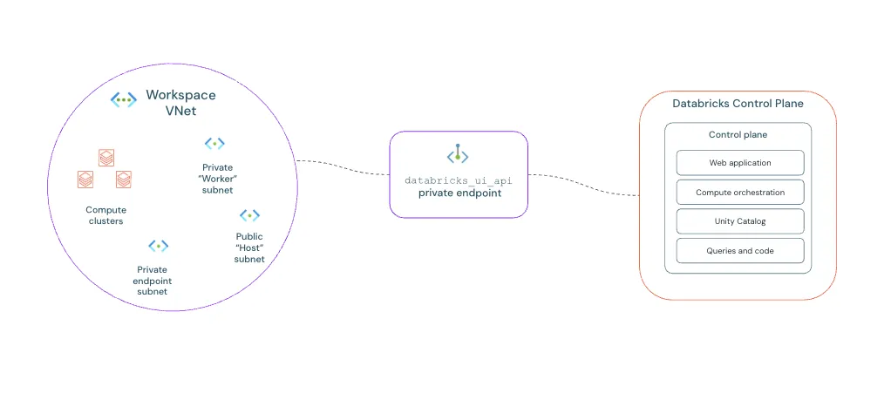

The regulator didn't care about our multi-million dollar Databricks demo. They pointed at the open public endpoint. Here is how we locked down the Data Lake without breaking the bank or taking the network down.
Executive Impact Summary
The Operating Model: How We Got This Built
In the enterprise world, an architecture diagram means nothing if you can't get the organization to agree to build it. Deploying a private Databricks environment is a notoriously political battle over boundaries.
The Organizational Friction
The Networking Team owns the Hub VNet and the central Azure Private DNS
Resolvers. They refuse to grant Contributor access to external teams.
The Data & AI Team owns the Databricks workspaces in the Spoke VNet. They just
want to write Python code and hate dealing with networking subnets.
The Practice Building Solution
As the Cloud Practice Lead, I circumvented this bottleneck by establishing a cross-functional Cloud Center of Excellence (CCoE) task force. We decoupled the deployment. We used Infrastructure as Code (Terraform) to automatically request DNS A-record updates via automated Pull Requests to the Networking team's repository. This allowed the Data team to deploy their spokes autonomously without compromising the central Hub's strict security posture.
Architect's Choice: The Bicep Standard
For native Azure shops, Bicep is the superior choice for managing Private
Link resolution. By using the experimental existing keyword, your spoke
deployments can safely inject A-records into the central Hub's Private DNS Zones without
requiring full Contributor permissions on the Hub VNet.
The Level-Set: What Are We Actually Defending?
If you're new to Cloud Architecture, let's step back before we talk about firewalls and DNS. Why does a bank or a hospital even buy Azure Databricks and an Azure Data Lake? What actually are they?
The Real-World Impact
A retail bank needs to process 50 million credit card swipes from the last 24 hours to flag fraudulent anomalies before the market opens. A standard SQL database would choke entirely. Databricks instead spins up 50 servers, processes the data in parallel directly from the Data Lake in 15 minutes, and instantly spins down so you stop paying for them.
The Exfiltration Threat (And Why VNet Injection Isn't Enough)
Deploying Azure Databricks isn't just about spinning up Spark clusters. For enterprise architects in regulated industries, deploying Databricks means solving a fundamental data residency and exfiltration paradox.
1. The Real Story on Azure Private Endpoints
What Private Endpoints Actually Protect
Private Endpoints remove public network exposure and constrain traffic paths. They do NOT by themselves stop data exfiltration caused by compromised identities.
Exfiltration is primarily controlled by:
- Storage permissions (RBAC)
- Service principals / managed identities
- Outbound network controls
- Audit monitoring
A Private Endpoint (PE) is literally just a virtual network interface (vNIC) injected into your subnet.
It
grabs a private IP from your address pool. From that point on, reaching
mydatalake.blob.core.windows.net resolves to `10.1.x.x` instead of traversing the public
Microsoft edge.
Why it matters:
- Public Exposure Drop: Instantly nullifies public internet scanning and direct internet access threats.
- Compliance Boundaries: Satisfies strict data residency controls. Traffic never leaves the Azure backbone.
- Reduces Attack Surface: It enables enforceable network boundaries. An attacker with compromised credentials inside your VNet faces strict network isolation restricting data export to their generic external Azure Storage account. PEs enforce a specific resource path, but do not replace identity-based data governance.
2. The 3 Private Link Flows in Databricks
Many teams slap a Private Endpoint on ADLS and call it a day, but a genuinely secure Databricks environment requires three separate Private Link flows to completely eliminate public exposure.
Decision Guide: Which Model Do You Need?
- Goal: Lock down User UI Access → You need Front-End Private Link + SSO Token Exchange.
- Goal: Secure Compute-to-Control Plane → You need VNet Injection + Back-End Private Link (SCC).
- Goal: Secure Data/Storage Access → You need PaaS Private Endpoints (ADLS Gen2, Key Vault).

-
Front-End Private Link: The connection from your users (via ExpressRoute/VPN)
to
the Databricks Workspace UI.

Reference: Official Front-End Private Link Architecture Analogy: The VIP Employee Entrance. Instead of staff walking through the public front doors (the open internet), they badge in through a private, secure underground tunnel directly from corporate HQ (your VPN). -
Back-End Private Link vs. SCC:
It is critical to not conflate these two. Secure Cluster Connectivity (SCC)
ensures your
VNet Injected clusters never receive Public IPs, but by itself, SCC routes
control plane traffic over the public Azure backbone.
Back-End Private Link steps in to force that SCC relay traffic through a
Private Endpoint, ensuring the connection back to the Databricks Control Plane never
touches public routing.

Reference: Official Back-End Private Link (SCC) Architecture What is VNet Injection?
By default, Databricks spins up worker nodes in a Microsoft-managed virtual network that you cannot see or control. VNet Injection solves this by deploying the data plane (your compute clusters) directly into your own customer-managed Azure VNet.
Why is it necessary?
It allows your clusters to securely access other internal resources (like on-prem databases via VPN, or storage via Private Endpoints) using your own established routing rules (UDRs) and Network Security Groups (NSGs). It is a hard prerequisite for zero-trust architectures.
How is it configured?
During workspace deployment, you must provide two dedicated, empty subnets from your VNet (a "public" subnet and a "private" subnet—though with SCC enabled, both are actually private). Databricks then orchestrates the underlying VMs directly into these subnets.
Analogy: The Secure Walkie-Talkies. The workers inside the building (your compute clusters) need to receive instructions from Headquarters (the Control Plane). Instead of shouting out the window, they use a private, encrypted radio channel that no one outside can intercept. -
PaaS Private Endpoints: How the data plane (compute) privately reads/writes to
ADLS
Gen2, pulls images from ACR, and fetches secrets from Azure Key Vault.
Analogy: The Internal Service Elevator. When workers need raw materials (Data) or building keys (Key Vaults), they don't walk out to the public loading dock facing the street. They use a private internal elevator to pull exactly what they need safely within the building.
3. Mandatory Components: The Deep Dive
To establish a fully locked-down Databricks environment without gaps, you must implement these controls. Let's break down exactly what they are and why they matter.
1. Browser Authentication (SSO Token Exchange)
What it is: A dedicated Private Endpoint used exclusively to handle OAuth/SAML token exchanges between your browser, Microsoft Entra ID (formerly Azure AD), and the Databricks Control Plane.
Interactive SSO Flow Diagram
Hover over the steps below to trace the secure authentication path.
1. User Requests Access
User queries
adb-123.azuredatabricks.net. The request hits the standard workspace
Front-End Private Endpoint.
2. Redirect to Auth Workspace
The Control Plane realizes the user lacks a session token. It redirects the browser through the dedicated Browser Auth Private Endpoint.
3. Entra ID Login Triggered
The browser communicates with Microsoft Entra ID (via public internet) to prompt for MFA and prove identity. Entra ID returns an authorization payload.
4. Secure Flow Token Exchange
The browser brings the auth payload back via the Browser Auth Private Endpoint. Databricks validates it and issues a signed Session Token (SSO Token).
5. VIP Access Granted
User is redirected back to the main workspace UI, carrying the new SSO token in their browser cookies. They are now fully authenticated.
2. Control Plane Routing (SCC + Back-End Private Link)
What it is: SCC ensures your compute nodes inside the VNet never receive Public IP addresses. However, SCC alone routes back to the control plane over the public Azure backbone. Back-End Private Link attaches to that SCC relay, forcing the nodes to call out to the Databricks Control Plane strictly over your private network.
- Zero Inbound Access: Because the cluster initiates the outbound traffic via the relay, there are no open inbound ports. Attackers cannot port-scan or reach into your clusters.
- Simplified Route Tables: Eliminates the need for complex Network Security Group (NSG) rules allowing inbound Control Plane IPs.
- Strict Boundary: You cannot mix SCC and non-SCC clusters in the same workspace. Once enabled, it's total lockdown.
3. Storage Account Private Endpoints (PaaS)
What it is: Private Endpoints enabling your compute clusters to read and write data to Azure storage services over the private Azure backbone network. Traffic never touches the public internet. Let's break down exactly what storage we are securing.
DBFS Root vs. Mounted Data Lakes
DBFS Root Storage
The Databricks File System (DBFS) Root is a default storage account automatically provisioned in your managed resource group when the workspace is created. It acts as the "C: Drive" for the workspace, storing system files, library installations (whls/jars), init scripts, and UI uploads.
Security Rule: Never store sensitive enterprise data here. It lacks fine-grained ACLs and is accessible to anyone in the workspace.
Mounted Data Lakes (ADLS Gen2)
These are your enterprise, customer-managed external storage accounts containing your actual Bronze, Silver, and Gold delta tables. They are connected ("mounted" or accessed securely via Unity Catalog external locations) for big data processing.
Security Rule: This is where your customer data lives. Strict Private Endpoints + Firewall "Deny All" rules are non-negotiable.
Storage Taxonomy: Why ADLS Gen2?
When configuring PaaS Private Endpoints, Databricks relies heavily on ADLS Gen2. Here is why it is strictly preferred over other Azure storage methods for Big Data:
4. Finalizing the Perimeter
- Key Vault Private Endpoint: Required for the compute plane to fetch Secret Scopes (passwords, connection strings) internally without traversing the internet.
- Public Network Access Disabled: Once all Private Endpoints are mapped, you must go to the "Networking" blades of your Storage Accounts, Key Vaults, and Databricks workspaces and set "Public Network Access" to Disabled. This ensures the Private Endpoints are strictly the only way in.
4. Topology Wars: Hub-and-Spoke vs. Local Mesh Routing
Here is where textbook architecture completely falls apart in production. Standard "Hub-and-Spoke" patterns dictate that all inter-spoke and internet-bound traffic routes through a central Azure Firewall (NVA) in the Hub. When applied blindly to Databricks Private Endpoints, this can become a massive performance and billing trap unless deep packet inspection is strictly required.
The vWAN Upgrade: Simplifying the Hub
In A++ architectures, the Azure Virtual WAN (vWAN) Hub replaces the manual NVA. When combined with the DNS Private Resolver, vWAN handles the spoke-to-spoke routing automatically, eliminating the need for manual UDR management while maintaining strict security boundaries.
4. Taming the DNS Monster
The #1 failure mode during a Private Endpoint cutover is Split-Brain DNS.
The Interactive Analogy: Two Maps to the Same Party
Imagine you are throwing a secretive house party. You give external friends (the internet) the public map address: "123 Main Street". You give family members (who are already inside the house) an internal map address: "Walk down the hallway to the Living Room".
"Split-Brain DNS" happens when your maps get crossed. If a family server asks for directions, and you hand them the public map ("123 Main Street"), they walk out the front door, drive around the block, and try to re-enter the house through the front gate—which your security bouncer (Azure Firewall) immediately blocks.
In Azure, your on-premises servers and VNet servers must realize the Data Lake is "inside the house"
(the
Private IP: 10.1.2.5). If your internal servers accidentally use public DNS, they will
resolve
the public IP of the Data Lake, route traffic out to the internet, and drop packets because the PaaS
public
firewall is set to Deny.
If your application teams are allowed to deploy their own Azure Private DNS zones inside disparate spoke VNets, you are literally giving out conflicting maps. You will experience catastrophic name resolution failures when on-prem clients or interdependent applications try to resolve the endpoints.

The Rule: Centralize your Azure Private DNS Zones in your Hub. Use the new Azure DNS Private Resolver. Corporate DNS must conditionally forward the following domains to the Azure DNS Private Resolver INBOUND endpoint IP:
privatelink.azuredatabricks.net
privatelink.blob.core.windows.net
privatelink.dfs.core.windows.net
privatelink.vaultcore.azure.net*.azuredatabricks.net or *.core.windows.net. This will hijack all public
domain resolution across your enterprise and cause global outages for any non-Private Link services.
- Workspace login fails
- SSO loops occur
- Clusters fail to start
The Pre-Flight Validation Checklist
Before proceeding with any cluster deployments or calling the architecture "done", you must validate the following controls from a machine inside your VNet or on-premises over VPN/ExpressRoute:
Validate DNS Resolution (`nslookup`)
Verify the Workspace URL and ADLS Gen2 URLs resolve to `10.x.x.x` Private IPs, not Public IPs.
nslookup adb-123.azuredatabricks.netVerify Private Path Flows
Ensure there are no asymmetric routing drops. Telnet to the Workspace Private IP on port 443 to confirm the network path is open end-to-end.
Disable Public Network Access
Navigate to the Networking blades of your Workspace, ADLS accounts, and Key Vaults. Ensure the 'Public Network Access' toggle is explicitly set to Disabled.
Monitor for Split-Brain Drops
When cutting DNS over, actively monitor Azure Firewall logs (if routing via Hub originally) and Databricks audit logs to confirm no internal traffic is suddenly dropping or flowing over public routes.
5. Where Each Component Must Live
Properly segmenting these endpoints is critical. Placing storage private endpoints in the hub causes hairpin routing and higher latency. Think of hairpin routing like sending a package to your next-door neighbor by mailing it to a centralized post office in another city, only for the post office to drive it all the way back to your street. It’s inefficient, expensive, and unnecessary. In Azure, this means forcing traffic from your Spoke VNet up to the Hub's firewall, just for it to turn right back around to talk to a storage account in that same Spoke VNet.
Hub VNet
- Private DNS Zones
- DNS Private Resolver
- UI/API Private Endpoint
- Browser Authentication Private Endpoint
- VPN/ExpressRoute gateway
Spoke VNet (Injected)
- Databricks compute subnets
- Storage private endpoints
- Key Vault private endpoints
6. Deployment Order (Critical)
To avoid race conditions and ensure Secure Cluster Connectivity successfully bootstraps, use this exact deployment sequence:
Phase 1: Foundation
- Create VNets and subnets
- Configure peering
- Deploy private DNS zones
- Deploy DNS private resolver + rulesets
Phase 2: Injection & Linkage
- Deploy Databricks workspace (with VNet injection and secure cluster connectivity)
- Create workspace private endpoints (UI & API)
- Create storage and key vault private endpoints
Phase 3: Lockdown & Validation
- Disable public network access across all resources
- Validate end-to-end DNS resolution
- Start clusters to verify Databricks Control Plane connectivity
Architectural Warning
Databricks compute clusters must be actively stopped during network-tier updates (like flipping the public network access toggle). Leaving clusters running during network isolation updates will result in a wedged state requiring a hard restart.
7. The "Cutover Night" Migration Checklist
Migrating from public to private is not an overnight "flip the switch" exercise. It's a progressive lockdown.
Parse Storage Analytics logs. Map every external system reading the public endpoint. You cannot shut off the public firewall without knowing who you are breaking.
Build the Private Endpoints and link the DNS. Do not disable Public Network Access yet. Let the VNet-injected components fail over to the private IP naturally while legacy systems continue to use the public route.
Update on-prem DNS forwarders for a select group of pilot users. Ask a QA team to access the workspace and validate end-to-end functionality.
Toggle the PaaS firewall to limit access to selected virtual networks, effectively dropping all public inbound connections. Follow up by deploying Azure Policy (`DeployIfNotExists`) to ensure drift doesn't occur.
8. Outbound Traffic Strategy
We recommend the following egress pattern for highly segmented environments:
- Allow: Private Link traffic and strictly required Azure service dependencies.
- Block: General internet access.
- Optional: Firewall inspection for internet-bound traffic only.
Important: Do not route Private Endpoint traffic through Azure Firewall unless deep packet inspection is specifically required.
9. Data Governance Layer
The Core of Data Governance: Unity Catalog & Domain-Level Entra Groups
Network isolation does not equal data governance. You must pair your private endpoints with automated, centralized data-plane controls.
Architectural Benefits
- Zero Role Sprawl: Active Directory handles the entire lifecycle; Databricks merely enforces it.
- Single Pane of Glass: Instant, globally auditable visibility into who has access to which tables.
- Automated Offboarding: When an employee leaves, disabling their Entra identity revokes all data access instantly.
Enterprise Use Cases
- Rapid Onboarding: Add a new Data
Scientist to the
Marketing-Data-ScientistsEntra group, and they instantly get read access to all relevant marketing schemas. - Isolated Sandboxes: Create a temporary
Project-X-Contributorsgroup for a secure cross-department project without touching Databricks ACLs.
Beyond centralized identity mapping, you must also enforce these secondary data-plane controls:
- Secret Scopes: Backed by Azure Key Vault to remove hardcoded credentials from notebooks.
- Managed Identities: Use Azure Managed Identities for authentication and authorization instead of Service Principals or Storage Account Keys, eliminating the overhead of credential rotation.
- Least Privilege RBAC: Granular permissions at the workspace and cluster levels, favoring built-in roles scoped correctly over custom roles.
- Environment Separation: Distinct Dev/Test/Prod metastores and workspaces.
10. Compliance Mapping
This architecture is designed to support the strictest regulated environments (e.g., Banking, Financial Services, Healthcare). However, it still requires identity governance and continuous monitoring. Here is how controls map to compliance requirements:
View Compliance Control Mapping
| Requirement | Control Mechanism | Audit Evidence |
|---|---|---|
| No public admin access | Private Link UI/API | Private IP resolution |
| Private data access | ADLS Private Endpoint | Storage firewall blocked |
| Auditability | Databricks Audit Logs | Log Analytics Queries |
| Network segmentation | Hub-Spoke Topo | VNet Peering Rules |
11. Enterprise Governance & Scaling
A single workspace is easy; an enterprise fleet is hard. To achieve "A+" maturity, you must transition from manual configuration to automated guardrails and global-scale networking.
Automated Policy
Don't trust; verify. Use Azure Policy to prevent the creation of workspaces with public access enabled.
"if": {
"field": "Microsoft.Databricks/workspaces/properties.publicNetworkAccess",
"notEquals": "Disabled"
},
"then": { "effect": "deny" }
Virtual WAN Scaling
For global organizations, the Azure Virtual WAN Hub becomes your DNS anchor. By associating the DNS Private Resolver with the vWAN Hub, you maintain a unified name resolution strategy across 100+ spokes without split-brain conflicts.
Azure Policy Guardrails (Enterprise Baseline)
To reach A++ maturity, security must be unskippable. We recommend these three mandatory guardrails:
12. Ingesting Data Securely (The ADF / SHIR Connection)
13. Common Failure Modes
If you hit a wall during deployment, it's almost certainly one of these four:
Login Redirect Loop
Root Cause: DNS misconfiguration or missing Private Endpoint specifically on the Browser Authentication target sub-resource.
Cluster Start Failure
Root Cause: Secure Cluster Connectivity (SCC) relay endpoint is missing, or the Databricks Workspace (databricks_ui_api) backend Private Link is misconfigured.
Workspace Unreachable
Root Cause: Wrong Private DNS Zone virtual network link targeting your client VNet, or corporate DNS conditional forwarders are failing to reach Azure resolution.
Storage Mount Fails
Root Cause: Storage firewall is still allowing selected VNet traffic but the compute isn't linked, or Unity Catalog / RBAC data plane permissions are insufficient for the identity.
Don't let your network team figure this out by trial and error.
Download the unvarnished Zero-Trust Reference Blueprint. It includes the high-res topology, hard design trade-offs, and critical anti-patterns necessary to accelerate your security review.
Access the Blueprint Guide14. The Private Link Survival Toolkit
Is your cluster stuck in "Pending"? Run these three validation tests from a VM in the Databricks Spoke VNet:
nslookup adb-xxxxx.azuredatabricks.net
Must return a Private IP (10.x.x.x). If it returns a public IP, your DNS Private Resolver isn't answering.
nc -vz storage.dfs.core.windows.net 443
Must succeed. Failures here usually point to missing UDRs or a misconfigured NSG.
Resolve-DnsName privatelink.blob.core.windows.net
Verify that the CNAME chain points to your Hub's private endpoint, not the public internet.
15. Residual Risks
Even with full private networking, risks remain. You are mitigating network-layer threats, but you still face:
- Compromised internal identities
- Malicious notebooks executed by authorized users
- Data copied to internally approved, but unsecured destinations
- Incorrect RBAC assignments
Mitigation: Continuous anomaly monitoring, strict least-privilege identity access, and comprehensive audit logging sent to Sentinel.
Essential References & Further Reading
For deeper technical dives, visual walkthroughs, and official documentation regarding Azure Databricks security, consult the following curated resources:
Azure Databricks Networking Security (Part 1)
Secure Data Engineering with Azure Private Databricks
Azure Private Link Concepts for Azure Databricks
Azure Databricks Best Practices
Ready to operationalize your Azure journey?
We don't do textbook theories. We build robust, regulated, multi-region cloud architectures designed for zero-trust environments.